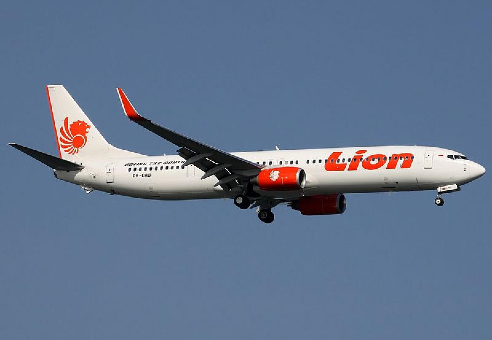
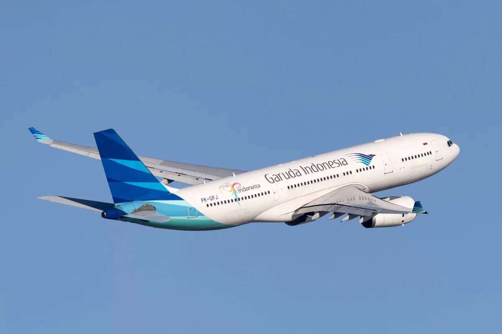
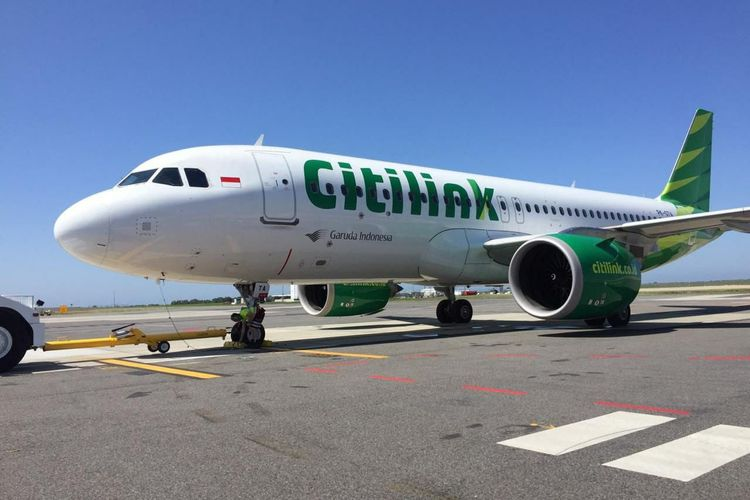

Maskapai
Lion Air
PT. Lion Mentari Airlines beroperasi sebagai Lion Air adalah sebuah maskapai penerbangan bertarif rendah (low-cost carrier) yang berpangkalan pusat di Jakarta, Indonesia. Lion Air sendiri adalah maskapai swasta terbesar di Indonesia. Dengan jaringan rute di Indonesia, Filipina, Malaysia, Thailand, Australia, India, Arab Saudi, dan Jepang, serta rute charter menuju China, Hong Kong, Korea Selatan, dan Makau. Lion Air menjadikan dirinya sebagai pemain Regional yang akan berkompetisi dengan AirAsia dari Malaysia. Sepanjang tahun operasionalnya, Lion Air mengalami penambahan armada secara signifikan sejak tahun operasionalnya pada tahun 2000 dengan memegang sejumlah kontrak besar, salah satunya yaitu kontrak pengadaan pesawat dengan Airbus dan Boeing dengan total keseluruhan sebesar US$ 46.4 Milliar untuk armada 234 unit Airbus A320 dan 203 Pesawat Boeing 737 MAX. Perusahaan sendiri telah memiliki perencanaan jangka panjang pada maskapai untuk memberdayakan armadanya untuk mempercepat ekspansinya di kancah regional Asia Tenggara dengan membuat anak perusahaannya sendiri, yaitu Wings Air dan Batik Air sebagai pemerkuat operasional maskapai di Indonesia dan untuk di luar negeri, Lion Air memperkuat kehadirannya dengan mendirikan Malindo Air dan Thai Lion Air. Lion Air mengoperasikan lebih dari 100 pesawat Boeing 737-800/900ER. Maskapai penerbangan ini telah ditandai dengan ekspansi yang cepat akibat deregulasi dari industri penerbangan di Indonesia tahun 1999 dan keberhasilan model bisnis tarif murahnya. Selengkapnya di Wikipedia.
Garuda Indonesia
PT Garuda Indonesia (Persero), Tbk. atau dikenal sebagai Garuda Indonesia adalah Maskapai penerbangan nasional Indonesia yang berkantor pusat di Bandar udara Internasional Soekarno–Hatta. Maskapai ini adalah suksesor dari KLM Interinsulair Bedrijf. Garuda Indonesia merupakan anggota SkyTeam satu satunya di Indonesia dan Maskapai Terbesar kedua di Indonesia setelah Lion Air. Garuda Indonesia mengoperasikan penerbangan berjadwal ke sejumlah destinasi meliputi Benua Asia, Eropa, dan Australia dari Jakarta, serta kota fokus, maupun kota lain untuk penerbangan Haji. Maskapai ini adalah satu-satunya maskapai dari Indonesia yang terbang ke wilayah Eropa dan Oseania. Maskapai ini juga pernah terbang ke wilayah Amerika hingga akhir 1990an. Pada puncak akhir 1980-an hingga pertengahan tahun 1990-an, Garuda mengoperasikan ke sejumlah jaringan penerbangan yang luas di seluruh dunia, dengan layanan terjadwal secara teratur ke Adelaide, Cairo, Fukuoka, Johannesburg, Los Angeles, Paris, Roma dan kota lainnya di Eropa, Asia dan Australia. Pada akhir 1990-an dan awal 2000-an, terjadi krisis keuangan dan sistem operasional yang menghantam maskapai dengan keras, menyebabkan Garuda Indonesia memangkas layanan secara drastis. Pada tahun 2009, maskapai melakukan rencana modernisasi lima tahun yang dikenal sebagai Quantum Leap, yakni dimana program Emirsyah Satar yang merombak segalanya mulai dari bentuk, corak, logo dan seragam maskapai, serta armada dan fasilitas yang lebih baru dan lebih modern serta fokus baru pada pasar internasional, dan berhasil mendapatkan penghargaan maskapai seperti Most Improved Airline, 5-Star Airline, dan World's Best Cabin Crew juga didapatkan pada ajang penghargaan Internasional, Skytrax. Maskapai ini juga mengoperasikan anak perusahaan berbiaya rendah, Citilink, yang menyediakan penerbangan murah ke beberapa tujuan Indonesia dan berdiri sendiri pada tahun 2012. Pada November 2018, maskapai mengambil alih operasi serta pengelolaan keuangan Sriwijaya Air melalui perjanjian Kerjasama operasional (KSO) Kerjasama ini berakhir pada Desember tahun 2019. Selengkapnya di Wikipedia.
Citilink
PT Citilink Indonesia adalah sebuah maskapai penerbangan bertarif rendah dan anak perusahaan Garuda Indonesia. Perusahaan ini berdiri tahun 2001 sebagai Unit Bisnis Strategis (SBU) dan difungsikan sebagai salah satu alternatif penerbangan bertarif rendah di Indonesia. Sejak tanggal 30 Juli 2012 Citilink secara resmi beroperasi sebagai entitas bisnis yang terpisah dari Garuda Indonesia setelah mendapatkan Air Operator Certificate (AOC). Citilink beroperasi dengan 17 pesawat dengan logo, tanda panggil dan seragam baru. Bandara penghubung utama maskapai ini adalah Bandar Udara Internasional Juanda di Surabaya. Selengkapnya di Wikipedia.